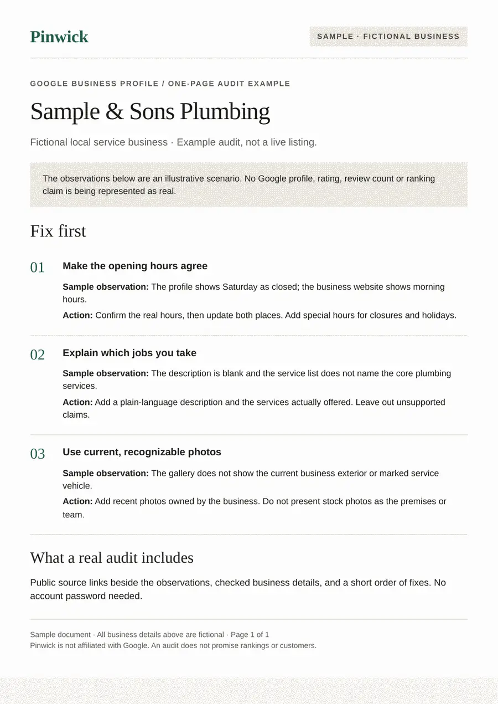

Google Business Profile audits
See what your Google listing is missing, in one page.
Pinwick reads your public Google Business Profile and writes a short audit: what is missing, what looks inconsistent, and the fixes to make first. It is for local businesses that get customers from Google Maps.
Ask for a sample auditSample audit for a fictional local business

What the audit checks
Basics
Name, category, hours, phone, website link and service area, read from your public profile.
Completeness
Description, services, photos and attributes that are empty or thin.
Consistency
Whether your name, address and phone match across your own website and a set of public directories.
Reviews
Review count, rating, and how many recent reviews have no owner reply.
How it works
- You send the link to your Google Business Profile.
- We read only what is public. We never ask for your login.
- You get a PDF with findings in plain English, ordered by what to fix first.
The audit lists what we can see from public pages. It does not promise rankings or more customers.
Ask for a sample
Tell us your business name and city and we will send a sample audit of your listing. Pricing is shared with the sample.
Placeholder address until a real one is set up.